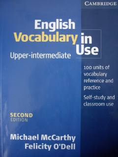

EVIngliz tili so'z boyligini oshirish va amaliy mashq qilish uchun mo'ljallangan qo'llanma.
Ushbu kitob o'rta-yuqori darajadagi (Upper-Intermediate) o'quvchilar uchun ingliz tili leksikasini o'rganish va mustahkamlashga mo'ljallangan. Unda yuzlab mavzular bo'yicha so'z boyligini oshirish, iboralar va ularni amalda qo'llash uchun qulay mashqlar keltirilgan.